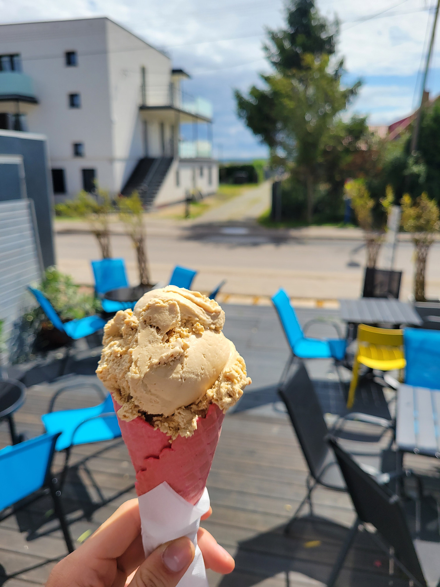
Lody
Gałka w rożku albo w kubku. Smaki zmieniają się w ciągu sezonu.
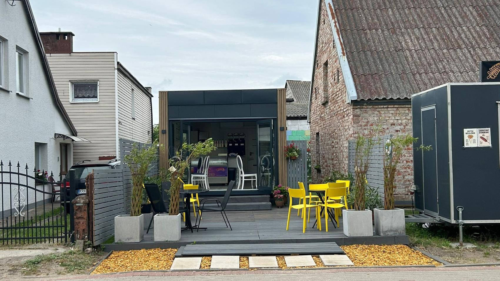
Mała sezonowa kawiarnia przy ul. Morskiej 32, jakieś 50 metrów od plaży. Lody rzemieślnicze, gofry z pieca, ciasta z witryny i nasz lodoburger.
Wszystko robimy na bieżąco, na miejscu: gofry wypiekamy na zamówienie, ciasta w większości pieczemy sami, a lody nakładamy do rożka albo do pucharka. Ceny znajdziesz w kawiarni, przy ladzie.

Gałka w rożku albo w kubku. Smaki zmieniają się w ciągu sezonu.
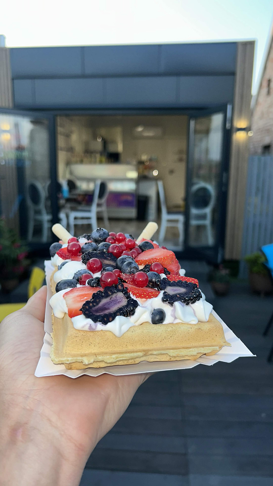
Wypiekane na miejscu, na zamówienie. Do wyboru bita śmietana, owoce sezonowe, polewy i posypki.
Zimne lody zamknięte w pączku, z kremem czekoladowym albo pistacjowym i cukrem pudrem. Składamy go przy zamówieniu.
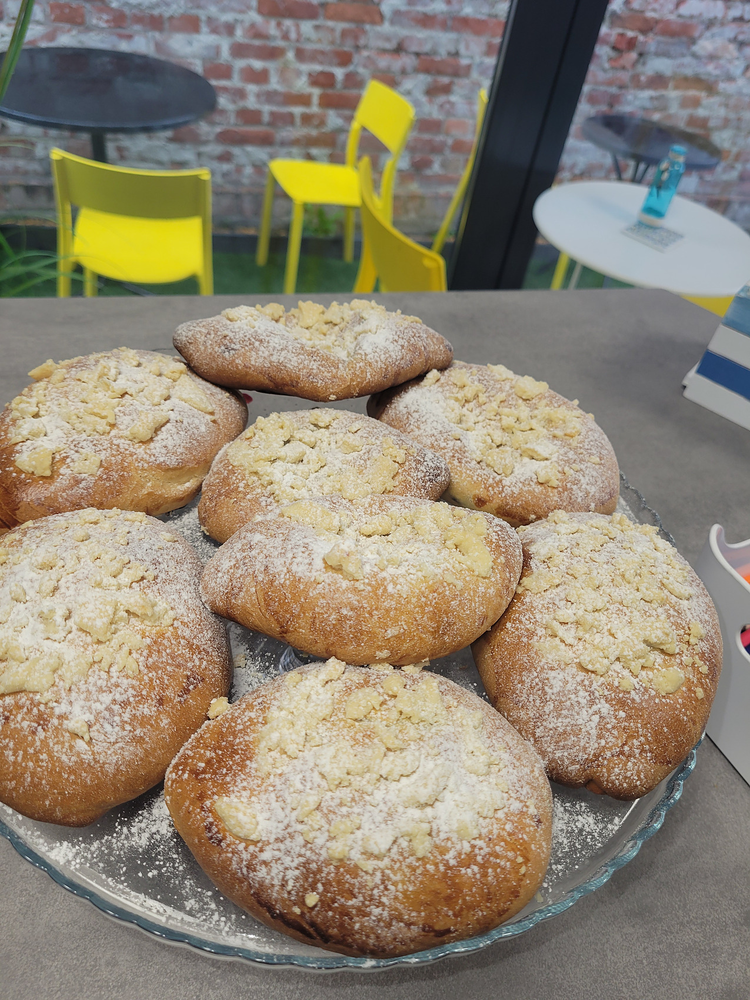
Wypiekane u nas, z prawdziwymi jagodami i kruszonką. Wychodzą partiami i schodzą szybko.

Większość wypiekamy sami, na miejscu — codziennie kilka sztuk w witrynie, między innymi sernik pistacjowy.
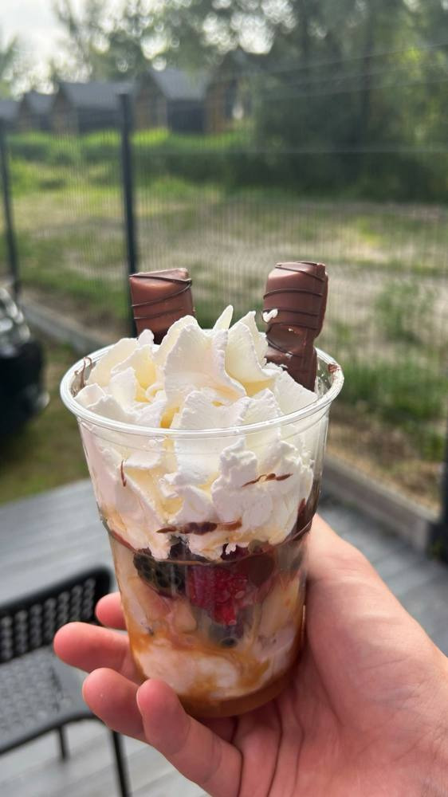
Kinder Explosion, Oreo Obsession, Kitkat Killer i Owocowa Fiesta. Także na wynos, w kubku.
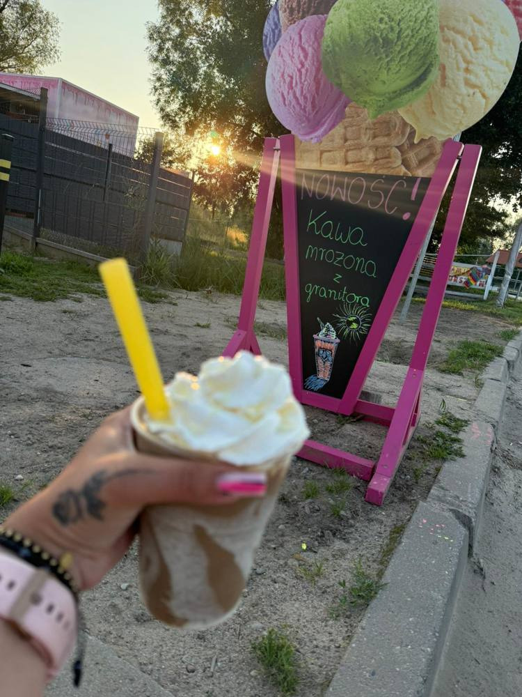
Flat white, americano, cappuccino, latte macchiato i espresso. W upał kawa mrożona z gałką loda.
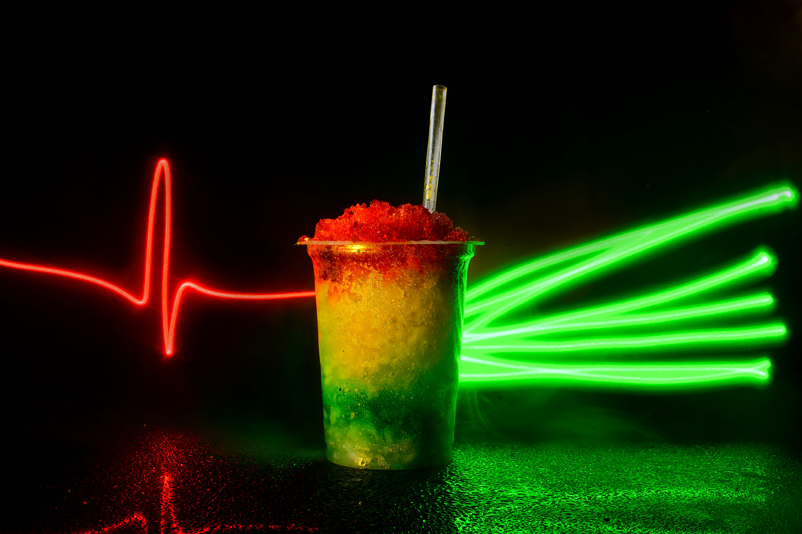
Granita w trzech rozmiarach, do tego woda, soki, cola i energetyki na wynos.
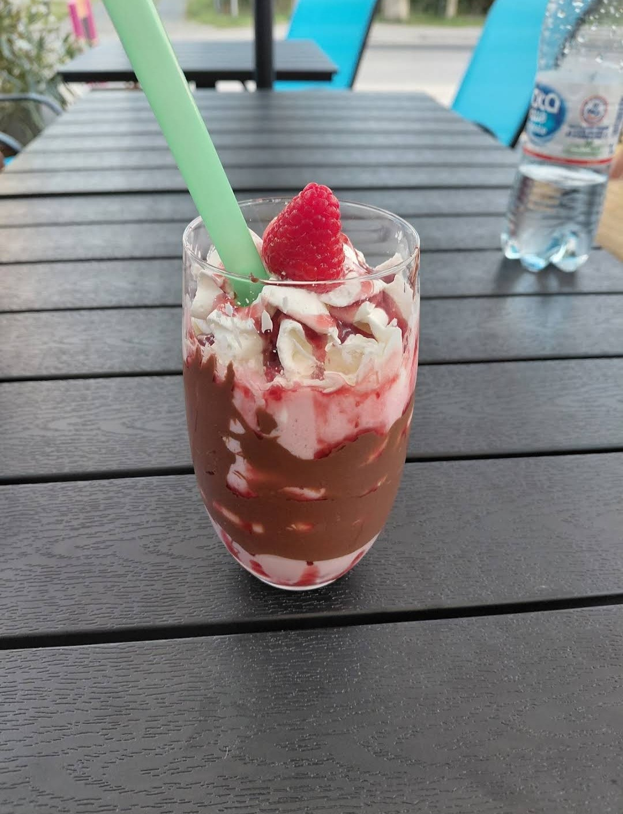
Na naszych lodach, z bitą śmietaną, sosem i owocem na wierzchu. Powstał z pytania gościa i został w menu.
Pieczemy je u siebie, w kawiarni. Ciasto drożdżowe, kruszonka, cukier puder i tyle jagód, że przy pierwszym kęsie robią się fioletowe palce. Wychodzą partiami przez cały dzień i schodzą szybciej, niż zdążymy je ostudzić.
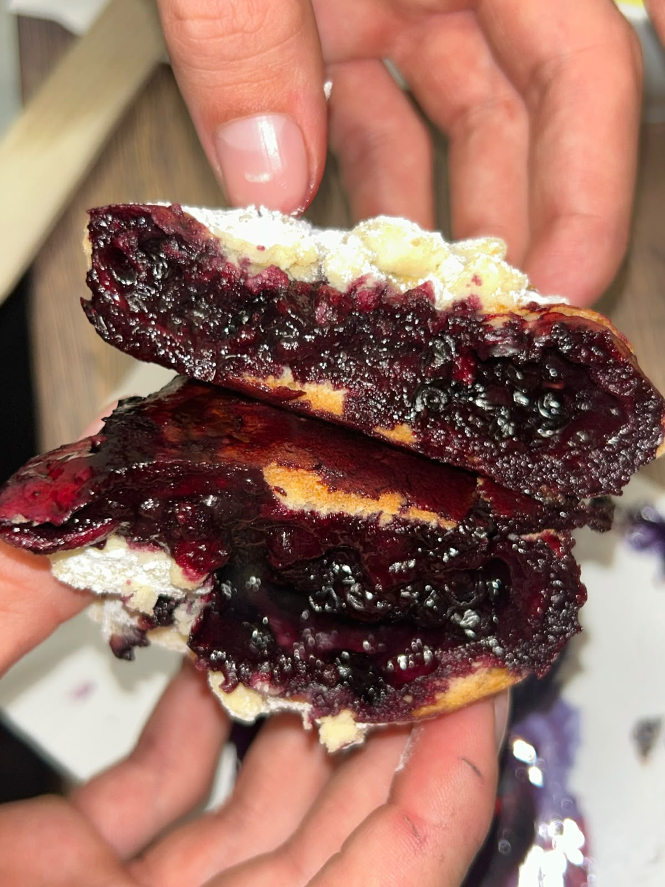
Chcemy, żeby Słodki Chłód był tym miejscem, do którego wraca się co wakacje. Nie dlatego, że jest po drodze, tylko dlatego, że dobrze się tu czuliście.
Zaczęliśmy od jednej budki, bez inwestora i bez sieci za plecami. Każdy gofr, każde ciasto i każdy nowy deser to nasz pomysł, sprawdzony najpierw na sobie i na znajomych.
Stoimy za ladą osobiście. Lubimy pogadać, doradzić smak, zapamiętać, co kto zamawia. Stali goście dostają u nas coś, czego nie da żadna aplikacja — rozmowę i to, że ktoś ich rozpoznaje.
Ciasta w większości pieczemy sami, gofry dopiero po zamówieniu, owoce kroimy tego samego dnia. Kiedy w sezonie brakuje rąk, bierzemy coś od sprawdzonych lokalnych cukierni — ale domyślnie robimy u siebie.
Jesteśmy stąd. Rewa leży na cyplu, z Zatoką Pucką po jednej stronie i Gdańską po drugiej, i chcemy, żeby to małe miejsce przy Morskiej było powodem, dla którego ktoś zapamięta całą okolicę.
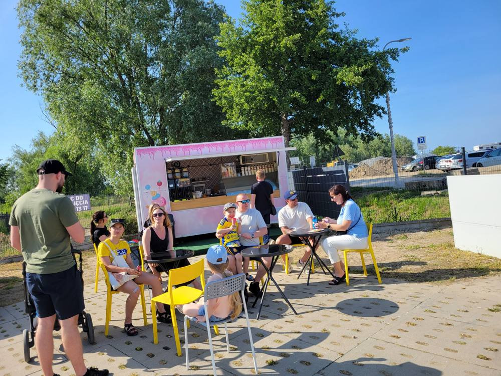
W 2025 roku, mając 19 lat, zaczynaliśmy od różowej budki z lodami w Mechelinkach. Rok później wzięliśmy kredyt i otworzyliśmy własną kawiarnię przy ul. Morskiej w Rewie — z ogródkiem, salą w środku i miejscem na ciasta, kawę i gofry.

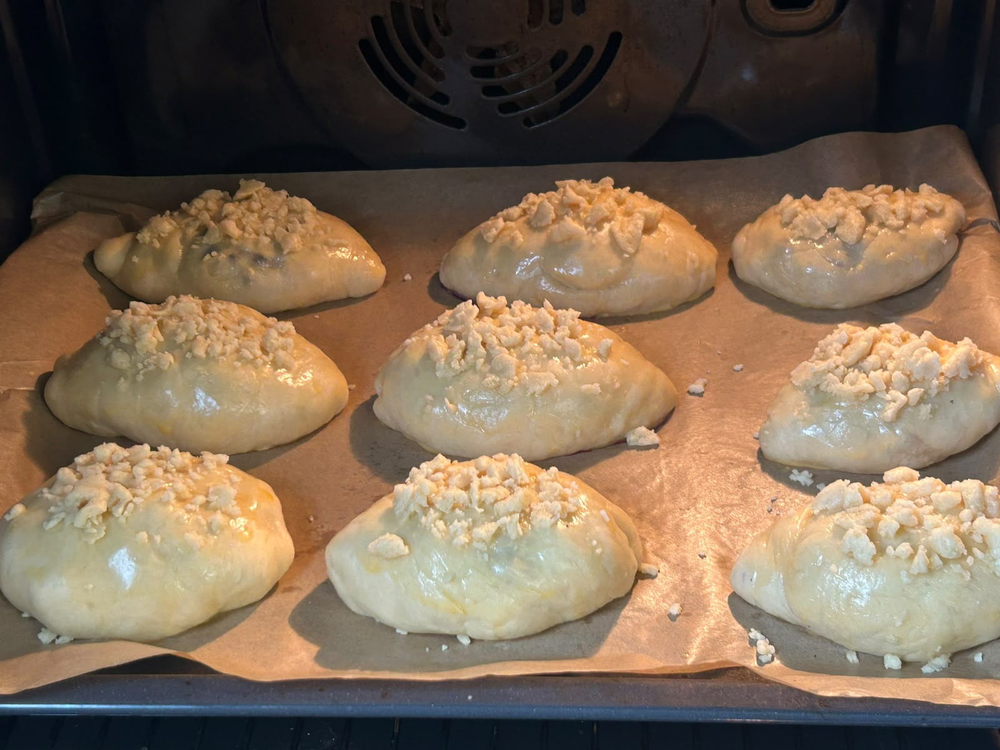


Ponad 70 opinii w Google. Goście najczęściej wracają po gofry z owocami, lody i desery lodowe. Jeśli byłeś u nas, zostaw proszę opinię — to dla małej sezonowej kawiarni ogromna pomoc.
Przy ul. Morskiej 32 w Rewie, w gminie Kosakowo — na cyplu między Zatoką Pucką a Zatoką Gdańską. Od plaży dzieli nas jakieś 50 metrów.
Nie, działamy sezonowo. Otwieramy wiosną i pracujemy przez całe wakacje aż do końca sezonu. Aktualne godziny podajemy na Instagramie i w wizytówce Google.
Zimne lody zamknięte w pączku, z kremem czekoladowym albo pistacjowym i cukrem pudrem. Składamy go u nas, na miejscu, na świeżych pączkach.
Prawie wszystkie wypiekamy u siebie, w kawiarni. W szczycie sezonu zdarza się, że wspomagamy się sprawdzonymi lokalnymi dostawcami, ale domyślnie ciasto w witrynie jest nasze.
Nie, nie mamy dowozu. Wszystko wydajemy na miejscu — możesz zjeść u nas w ogródku albo wziąć na wynos i iść z tym na plażę.
Tak. Przed kawiarnią mamy ogródek ze stolikami, a w środku salę z miejscami siedzącymi.
Tak. Pełną listę alergenów dla lodów, gofrów, dodatków i ciast udostępniamy na miejscu — wystarczy poprosić obsługę przed zamówieniem.
Około 50 metrów. Wychodzisz od nas i praktycznie jesteś na plaży.